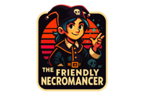

⬅️
Daily Blogroll: 2025-10-16
➡️
Syp jumps back into World of Warcraft with Legion Remix, savoring nostalgia and familiar quests on a Gnome Hunter.
Tipa recaps a thrilling Malifaux showdown, highlighting strategic twists and memorable narrative moments in the game.
Azuriel breaks down the controversial Xbox Game Pass price hike and its potential impact on gamers and Microsoft's bottom line.
Belghast rejoices over forming a guild in Destiny Rising, sharing the challenges and triumphs of gaming community building.
Wilhelm previews EverQuest II's latest expansion, Rage of Cthurath, promising a dive into the eerie and chaotic Void realm.
Tobold dissects the potential pitfalls of AI's profit-driven ventures, hinting at a fragile bubble in tech innovation.
Joargarrosh reflects on life's unpredictability, exploring the importance of flexibility after unexpected career and family changes.

The Friendly Necromancer shares a heartfelt health update, detailing the emotional rollercoaster of transitioning from chemo to immunotherapy.
Jamie Zawinski shares a cryptic post titled ‘Show them the finger, babe’ with a nod to past eras and pop culture.
Scopique dives into a tech update, from 3D printing holiday gifts to setting up smart home dashboards with Home Assistant.
Dave Winer discusses WordPress's impactful journey and how it's continued to shape content management online.
Remy Porter reveals the lengths a company went to refresh an API token every day for years, causing a server headache.